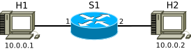
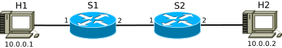
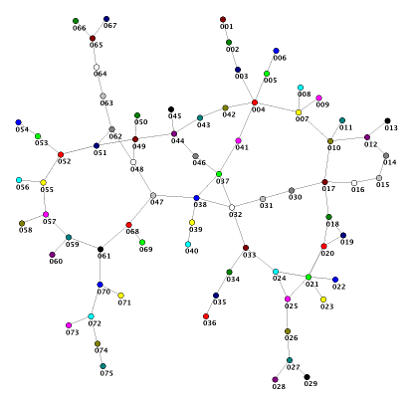
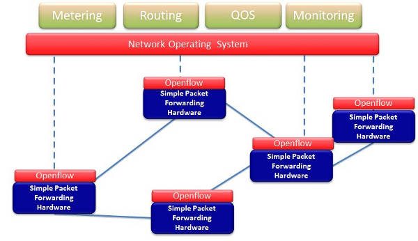

Plenty of things have been said and written about OpenFlow. Experts from the industry shared their thoughts and experiences. Crowds on Twitter witnessed the trends that are roused with the rise of software-defined networking and OpenFlow. But so far not much has been said about the internals of the underlying technology. They unfortunately ignored a serious part of the audience… us, the developers.

In this blog post I will try to fill this gap and step by step guide you through routing a packet in an OpenFlow network. Buckle your seat belt Dorothy!
Traditional Networking
Let’s start from what we have today. Consider a network composed of a single L2 learning switch as follows. Assume that no hosts and switches broadcast any ARP or whatsoever packets yet. The network is initially at stale state.

Every L2 switch operating in learning switch mode works according to a pretty basic rule: Do I know the hardware address of the host this packet is destined to? If yes, forward the packet to the port the host is last observed on, otherwise, flood it through all available ports, except the incoming one. Simultaneously, the switch also learns the hardware address of the host the packet is originated from. Hence, whenever it matches a packet destined to this host, it will know where to forward it to. Observed hardware address to port map is stored in a forwarding table composed of forwarding rules as follows.
| Hardware Address | Port |
|---|---|
| 00:24:54:b9:1c:f8 | 1 |
| e8:39:df:6a:21:2a | 3 |
| c3:21:d2:6a:33:3b | 1 |
The interpretation of this table is simple: if there is a packet destined to a device with hardware address (that is, MAC address) 00:24:54:b9:1c:f8, route it through port 1, if it is destined to e8:39:df:6a:21:2a, route it through port 3, etc. Note that forwarding decision is based on the L2 address of the destined host, that is, the switch is oblivious to the information exposed by the higher layers. (For instance, an L2 switch does not take the destined IP address, transport protocol (TCP, UDP, etc.), and/or application protocol (HTTP, FTP, etc.) into account.)
This hardware address based forwarding mechanism necessitates hosts to attach the hardware address of the destination host while sending a packet to the network. For that purpose, every (decent) operating system has an ARP cache for mapping IP addresses to the hardware addresses. Consider my current ARP cache as of this writing.
$ arp -an
? (10.100.92.254) at ec:30:91:e3:53:80 [ether] on eth0
? (10.100.92.10) at 1c:6f:65:aa:79:48 [ether] on eth0
But initially, how does a host know the hardware address of a remote host? In a broad sense, how does H1 really connect to H2 in a traditional network composed of L2 switches? Let’s step by step investigate the network traffic for a scenario where H1 tries to send an ICMP echo request (that is, ping) to H2. (Initially we assume that the forwarding table of S1 is empty, H1 and H2 have no entries in their ARP caches and H1 knows the IP address of H2.)
- H1 needs the hardware address of the machine assigned to H2’s IP address
10.0.0.2.- It first checks its ARP cache. Since an ARP entry for IP address is initially missing in H1’s ARP cache, it broadcasts an ARP request asking for the hardware address of
10.0.0.2. - Along with the request, H1 attaches its IP and hardware address. H2 will use this information to send the reply back.
- It first checks its ARP cache. Since an ARP entry for IP address is initially missing in H1’s ARP cache, it broadcasts an ARP request asking for the hardware address of
- ARP request reaches to S1.
- Since S1 was at stale state, its forwarding table is empty, that is, S1 does not know what to do with a packet destined to H2’s hardware address. Hence, it floods the packet through all of its ports, except the incoming port of the packet.
- While doing so, due to incoming ARP request from H1, S1 also learns that H1 is reachable through port 1. Hence, S1 adds a new rule to its forwarding table for routing packets destined to H1’s hardware address through port 1.
- Flooded ARP request finally reaches to H2.
- H2 parses the ARP request and figures out that H1 was looking for H2. Using the attached IP and hardware address of H1 in the ARP request, H2 sends an ARP reply destined to H1.
- In the meantime, H2 adds H1’s IP and hardware address to its ARP cache.
- ARP reply reaches to S1.
- Now S1 learns that H2 is reachable through port 2. Hence, it adds a new forwarding rule to route packets destined to H2’s hardware address over port 2.
- S1 looks at the ARP reply and figures out that it is destined to H1, of whom S1 has previously learnt that is reachable through port 1. Hence, S1 forwards ARP reply to port 1.
- ARP reply reaches to H1.
- H1 learns the hardware address of H2 and updates its ARP cache.
- H1 sends an ICMP echo request destined to H2’s IP address, along with H2’s hardware address.
- Echo request reaches to S1. Due to previously observed ARP traffic, S1 knows where H2 is and forwards the request accordingly.
- Echo request reaches to H2 and it replies back.
- Echo reply reaches to S1. S1 knows where H1 is and forwards the reply.
- Reply reaches to H1.
Now considering the intermediate hops between you and Google, the multitude of protocol plumbing ongoing at various OSI layers, can you imagine the necessary workload that gets triggered when you send an ICMP echo request to Google?
Let’s make things just a little bit more complicated: Consider yet another basic network composed of two L2 switches as follows.

In the case of a single switch, due to flooding the ARP request reaches to H2 in 1 hop. For the case with 2 switches, the flooded request will first hit to S2, and in a similar way to S1, S2 will also flood the packet and after that the request will reach to H2, that is, in 2 hops. Simple, eh? Now consider a real network as follows.

For the cases we investigated above, there is always a single route between the source and the destination, no more, no less. Hence, the only choice a switch would make will lead it to the optimal route. (Optimality in routing is a pretty ambiguous term unless given the used context. For instance, it can refer to the shortest path in terms of hop count, the least loaded path, the cheapest path if it involves two inter-connecting autonomous systems, etc. In this post, by optimal I will refer to the hop-count-based shortest path.) In a topology with loops, how will the switches tackle the problem of flooding storms? (That is, in a triangular topology between switches S1, S2, and S3, S1 floods a packet to S2, S2 floods the packet to S3, S3 floods the packet back to S1, and S1 again tries to flood the same packet to S2, and so on.) For a case where multiple routes exist between the endpoints, how will a switch decide on which route to prefer while forwarding a packet? Luckily these problems have been addressed in the literature by the so called routing protocols (STP, OSPF, IS-IS, etc.) that is used for the purpose of coordination and cooperation between the switches.
The real-world deployment of a routing protocol is known to be a time consuming process. (For instance, IETF standardization of TRILL took almost 6 years. God knows when it will ever have a wide adoptance.) In addition, the introduced protocols are expected to run in a distributed fashion between individual switches, provide backward compatibility with the existing infrastructures and need to be implemented on the hardware for each switch. These restrictions put the network into an ossified state, where it almost becomes practically impossible to evolve the network without replacing the hardware. Enter the software-defined networking!
Software-Defined Networking
At its heart Software-Defined Networking (SDN) has a single basic premise: separation of the control and the data planes. Check out the renowned SDN piooner Nick McKeown’s famous figure.

So how should we interpret this figure? Let’s first start by some basic definitions.
- Data Plane
- Data plane is composed of simple packet forwarding switches, not necesarily physical, could be virtual as well. Switches are responsible for forwarding incoming packets according to the existing rules in forwarding tables. If a packet that does not match with any of the existing rules, switch forwards it to the upper layer (i.e., control plane) and waits for a decision.
- Control Plane
- Control plane hosts the applications. (Let this be a routing or a monitoring application.) It interprets the commands dictated by applications and programs the switches in the data plane accordingly.
- Northbound Interface
- The communication medium between the control plane driver (i.e., controller) and the applications.
- Soutbound Interface
- The communication medium between the data and control planes.
Before going into the details, let’s try to evaluate the above ping scenario in an SDN environment this time. Again consider a network composed of 2 hosts and a single switch sitting in between. Let the switch be connected to a controller C1 that hosts a simple routing application, e.g., a learning switch application. Workflow is as follows.
- H1 sends an ARP request to S1.
- ARP request does not match with the existing rules on S1 and S1 redirects the packet to the controller.
- It is the first time C1 is exposed to H1 and it does not know where to forward the packet to. Hence, C1 tells S1 to flood the packet.
- Flooding command reaches to S1 and S1 floods the packet.
- Flooded ARP request reaches to H2 and H2 replies back.
- ARP reply reaches to S1 and due to packet match miss, S1 forwards the packet to C1.
- C1 has previously observed that H1 is reachable through port 1 of S1, hence, C1 sends the packet to S1 to send it to port 1.
- Due to sent command from C1, S1 sends the packet to port 1.
- H1 receives the ARP reply.
It appears that nothing much changed from our previous traditional network scenario. This is a little bit disappointing. We introduced one more hop (that is, the controller) that a packet needs to traverse through, but the result is still the same. No, we have given this example to demonstrate the basic working of a software-defined network composed of a single switch and two hosts. Yes, due to the small size of the network we could not evaluate the benefit that was granted with the SDN premise, but consider a larger network with multiple paths between end points.